Кино и бессознательное
Что роднит эти фильмы?
Между крайними кадрами этой плёнки — без малого три десятилетия раннего кино: от ярмарочного трюка до фильма о самом анализе. Держит их вместе одно: каждый выводит на экран не событие, а его подспудную, вытесненную изнанку.
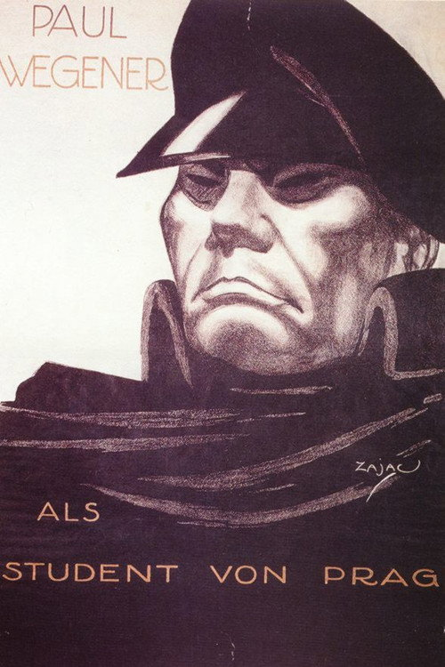
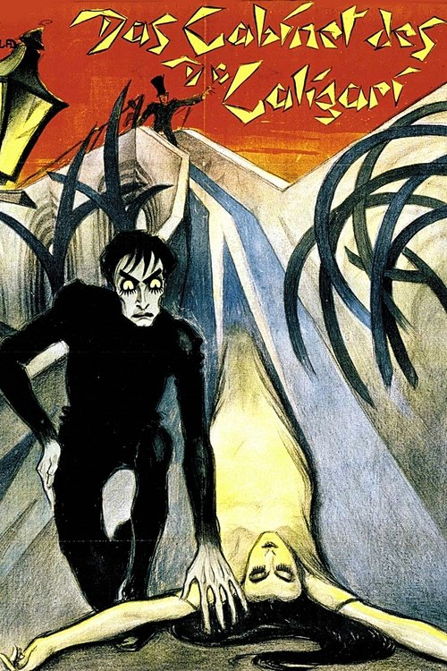
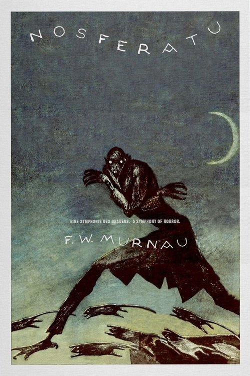
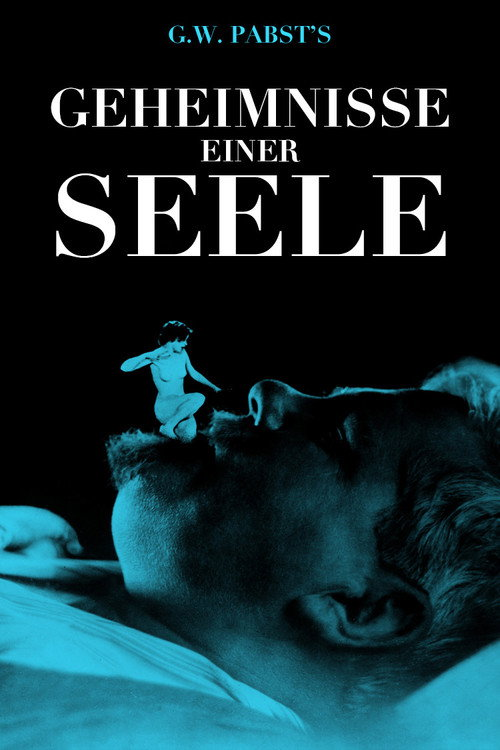
Главный вопрос
Психоаналитическая теория кино спрашивает не «что чувствует герой», а как фильм устроен так, чтобы затрагивать бессознательное зрителя и текста.
Курс движется от оснований к спорам: сновидение и симптом, аппарат и зеркало, взгляд и желание, фантазм, Реальное и его критики. Эта лекция закладывает три первичные фигуры — жуткое, двойник и первый показ самого анализа — и выдаёт рабочий инструмент: шесть шагов чтения.
Видимая фабула: то, что фильм рассказывает напрямую.
Подспудная логика образов, повторов и умолчаний.
Симптоматичный разбор формы, а не диагноз персонажу.
Родство на одной шкале
Кино и психоанализ росли рядом: на каждую веху теории экран отвечает своей. Два золотых узла в начале — рождение обоих в один год.
Царство теней
Вчера я был в царстве теней.
Очерк о сеансе Люмьеров на ярмарке описывает не аттракцион, а загробный мир: серое беззвучное пространство, где движутся не люди, а их призраки.
Первый большой отклик на кино говорит языком жуткого. До эссе Фрейда остаётся двадцать три года, а словарь уже готов.
Фокусник открывает киноязык
Стоп-трюк Мельеса делает исчезновение, замену и умножение базовыми жестами экрана. В «Четырёх беспокойных головах» (1898) иллюзионист трижды снимает собственную голову, и все четыре поют хором.
Инвентарь будущего киноужаса — оживший предмет, отделившаяся часть тела, двойник — собран на ярмарке, задолго до встречи с теорией.
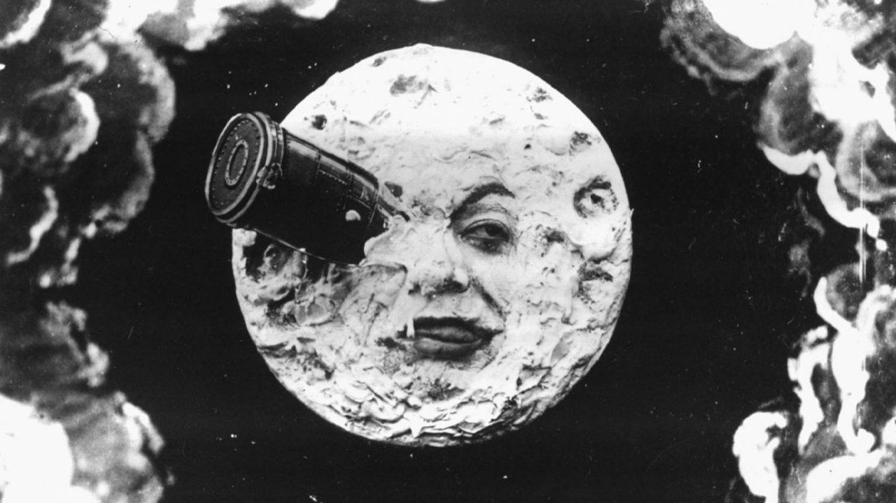
Другая сцена
Почему именно кино
Зал отрезает внешний мир; остаётся один источник света.
Тело обездвижено, почти как у спящего.
Мерцающий поток держит взгляд без усилия воли.
Глаз автоматически совпадает с камерой и героем.
Критическая проверка отступает перед потоком образов.
Первая теория кино
«The Photoplay: A Psychological Study»: фильм собран законами внимания, памяти и воображения — экран повторяет устройство сознания. Психология заметила кино раньше, чем психоанализ.
Фрейд против кино
В 1925 году Сэмюэл Голдвин едет в Вену с гонораром в сто тысяч долларов: пресса титулует Фрейда «величайшим специалистом по любви», студии нужен консультант «великих любовных историй экрана». Фрейд отказывает, даже не приняв гостя.
Тем же летом, в письме Карлу Абрахаму о готовящихся «Тайнах одной души», он объясняет мотив: пластическое изображение абстракций анализа кажется ему невозможным.
О кино в корпусе Фрейда единичные обмолвки; систематического текста нет.
Психоаналитическая теория кино рождается лишь в 1970-е, у Бодри и Метца, без благословения основателя.
Метод: шесть шагов
Вопрос
Фабула откладывается; предмет разбора — устройство фильма.
Симптом
Где форма сбоит: странность, избыток, шов.
Повтор
Что возвращается помимо нужд сюжета.
Желание
Чью нехватку обслуживает сцена; куда поставлен зритель.
Отсутствие
Чего в кадре нет, хотя логика его требует.
Скрытое
Какую мысль текст прячет от самого себя.
Шесть шагов на одном фильме
Вопрос. Фабула вампира откладывается; предмет разбора — устройство кадра, тени и монтажа.
Симптом. Тень живёт отдельно от тела: форма отделяет силуэт от носителя раньше всякого сюжета.
Повтор. Пороги, окна, арки: действие снова и снова упирается в границу дома.
Желание. Эллен ждёт ночного гостя помимо воли; жертва и влечение совпадают в одном жесте.
Отсутствие. Насилие отдано тени и эллипсису: рука-силуэт сжимается над сердцем вместо раны.
Скрытое. Дневной порядок брака держится на вытесненном, и оно возвращается ночью.
Знакомое, ставшее чужим
Жуткое — не просто страшное. Это особый испуг, что ведёт назад, к давно знакомому и вытесненному.
Фрейд отталкивается от немецкого heimlich («домашнее, родное», но и «тайное») и показывает, что слово исподволь переходит в свою противоположность, unheimlich. Жуть рождается, когда привычное внезапно открывает скрытую изнанку.
Жуткое есть тот род пугающего, что восходит к давно известному, издавна привычному.
Откуда берётся жуть
Неуверенность ума
Жуть — от сомнения, живое перед нами или нет: восковая фигура, автомат, кукла. Так пугает Олимпия из «Песочного человека» Гофмана.
Возврат вытесненного
Глубже неуверенности лежит возвращение подавленного: детский страх, инфантильная вера, потаённое желание, что считалось преодолённым.
Фрейд не отменяет Йенча, а углубляет: автомат жуток не сам по себе, а потому что будит давно вытесненное. Кинокамера получает оба источника готовыми.
Чем оживает жуть
Двойник
Отделившееся подобие: тень, отражение, второе «я».
Повтор
Навязчивое возвращение одного и того же помимо воли.
Автомат
Кукла, манекен, оживший механизм на грани живого.
Мёртвое
Возвращение умерших, нежить, преждевременное погребение.
Взгляд
Дурной глаз, утрата глаз, отделённый смотрящий орган.
Судьба
Всевластие мысли: слово или желание, что вдруг сбывается.
ДвойникДвойник
От бессмертия к смерти
Отто Ранк, ближайший ученик Фрейда, посвящает двойнику отдельное исследование — и берёт примером именно кино.
Сначала двойник — тень, отражение, изваяние — служил гарантией бессмертия: душа, что переживёт тело. С распадом этой веры фигура переворачивается и становится зловещим предвестником гибели. Корень двойника Ранк видит в первичном нарциссизме.
Страж жизни → знак конца
То, что должно было спасти «я» от смерти, в новое время несёт смерть тому, кто его породил.
Двойник на экране
Зеркало
Образ, что вдруг живёт отдельно от того, кто в него смотрит.
Тень
Силуэт обретает волю и опережает тело на стене.
Двойная экспозиция
Один актёр в двух ролях в одном кадре, наложение плёнки.
Кинематограф будто создан для двойника: отражение, тень и наложение — его собственные средства. Эта фигура вернётся как зеркальное «я» у Лакана и как Тень в коде лекции.
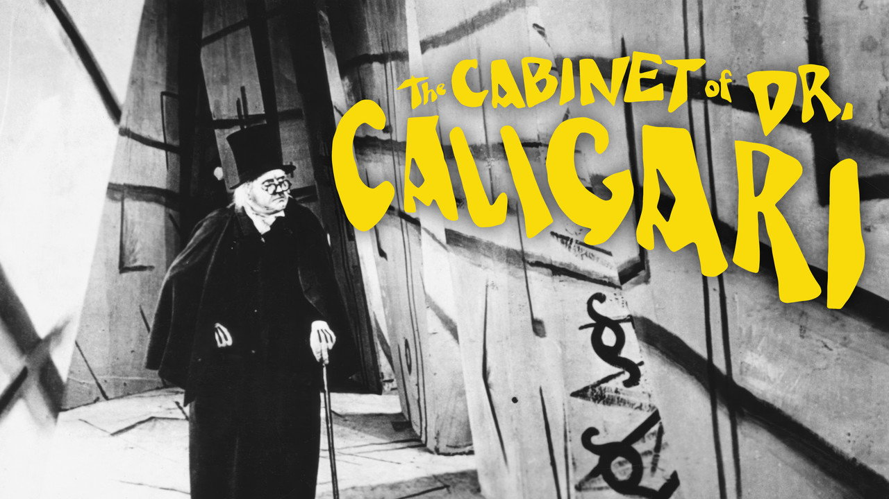
Кабинет доктора Калигари
Доктор с ярмарки поднимает сомнамбулу, чтобы тот убивал во сне. Косой город сам оказывается симптомом.
Бедность студии,
радикальная форма
Картину выпускает «Декла» в обескровленной поражением Германии 1919–1920 годов. Мир строят кистью, а не плотницким реквизитом: дефицит материалов оборачивается стилем. Прямой угол изгнан из кадра почти полностью.
Студия добавила пролог и эпилог, сместив политический замысел сценаристов к истории частного бреда.
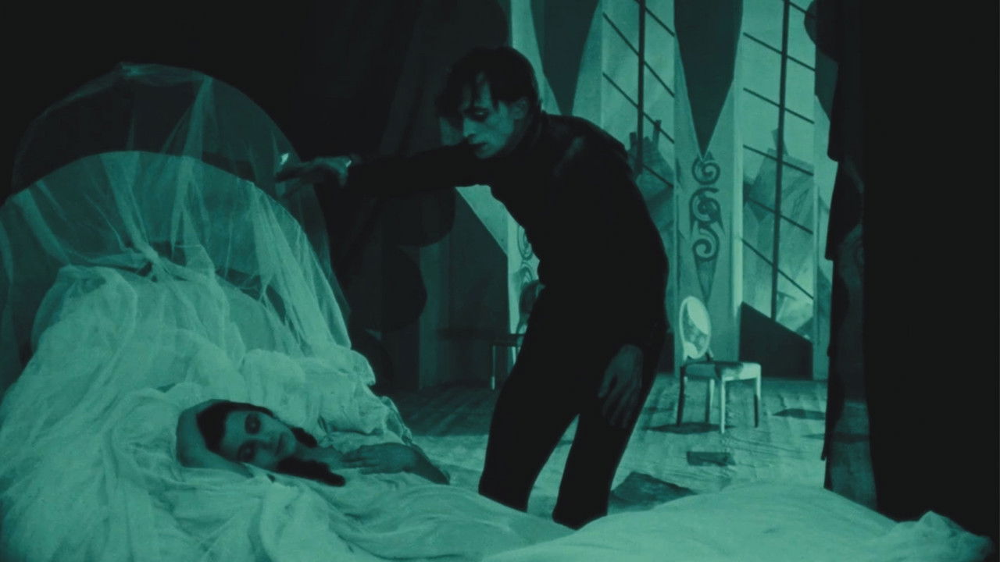
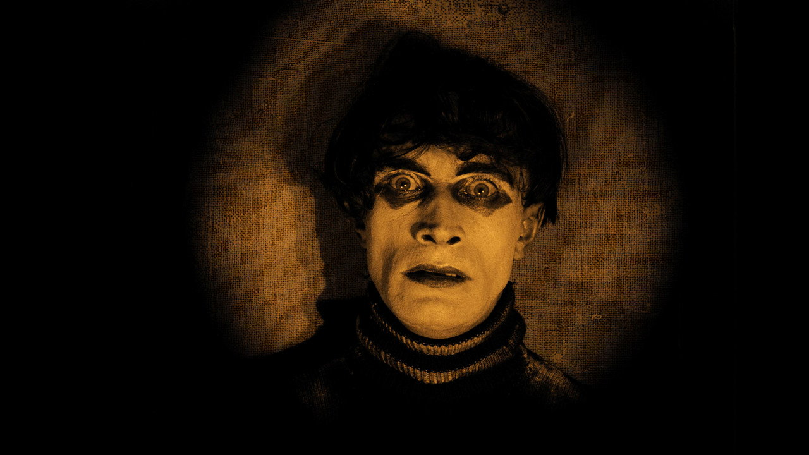
Тело между сном и явью
Сомнамбула открывает глаза по приказу: скольжение вдоль стены, застывший взгляд, лицо-маска. Чистая фигура автомата из каталога жуткого — живое и неживое разом.
Кто здесь безумен
Эпилог открывает: сад принадлежит лечебнице, а рассказчик — её пациент. Искажённый город оказывается субъективной проекцией больного сознания. Косая декорация получает мотивировку задним числом: глаз зрителя весь фильм смотрел изнутри бреда.
Ненадёжный рассказчик
Рамочный нарратив переназначает безумие и заставляет пересобрать всё увиденное. Доверие к изображению подорвано.
Автомат и всевластие мысли
Тело по чужой воле
Чезаре спит и убивает: воля изъята, осталась механика. Йенч указал на такой испуг раньше Фрейда — сомнение, кто перед нами: человек или заводная вещь.
Приказ, что сбывается
Слово Калигари исполняется чужими руками и на расстоянии — всевластие мысли из каталога жуткого. Гипноз здесь не медицина, а форма обладания.
Рамка эпилога довершает вытеснение: политический кошмар переписан в частный бред. Спор о том, чей это бред, открыт по сей день.
Как читали «Калигари»
Симптом эпохи: рамка оправдывает власть — репетиция подчинения тирану.
Демонический экран: корни в романтизме и светотени Рейнхардта, политика тут ни при чём.
Архивная ревизия: найденный сценарий рушит легенды создателей о замысле и «краже» смысла рамкой.
Историческое воображаемое: сам спор о «Калигари» сконструирован взглядом после катастрофы.
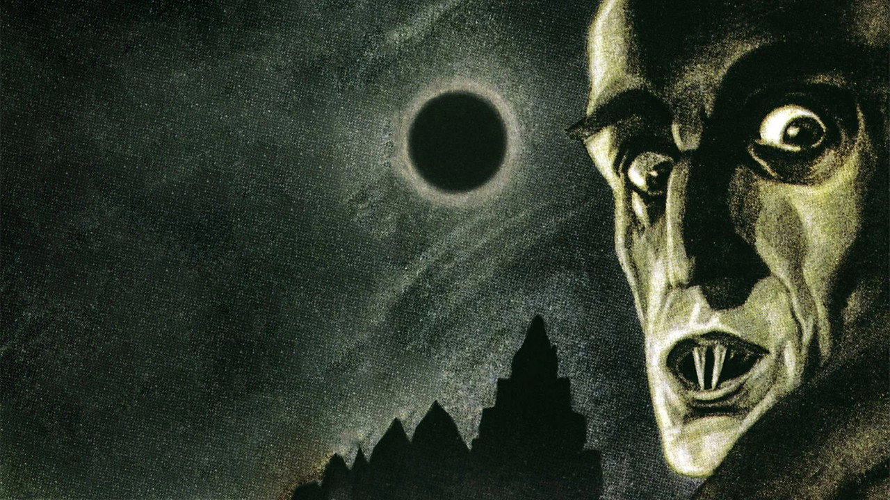
Носферату
Граф Орлок везёт в немецкий город чуму и крыс. Ужас держится не на гриме, а на возвращении того, чему положено быть мёртвым.
Фильм вне закона
«Прана-фильм» экранизировала «Дракулу» Брэма Стокера без прав, сменив имена. Вдова писателя выиграла суд, и в 1925 году было предписано уничтожить все копии. Картина выжила случайно, по разрозненным отпечаткам.
Мурнау снимал на натуре — в Висмаре, Любеке и в карпатском замке, — отчего нежить ещё неуместнее среди реальных пейзажей.
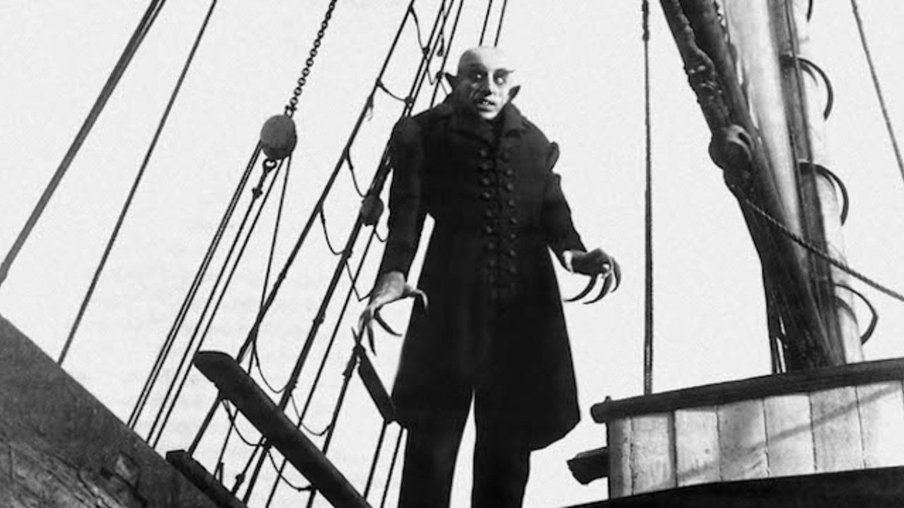
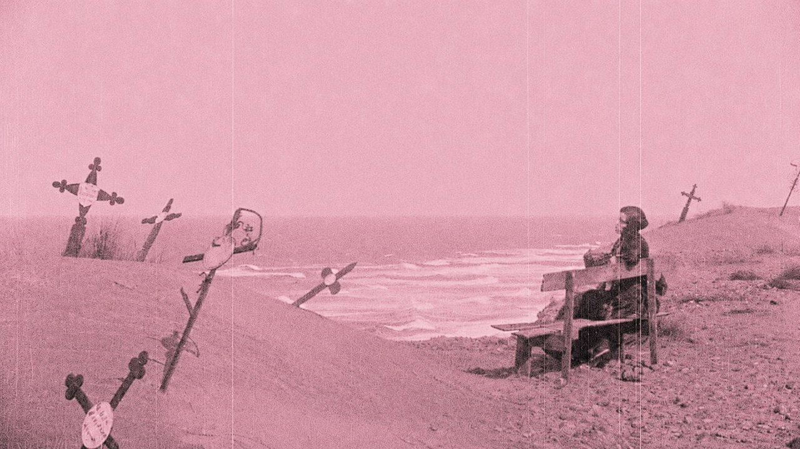
Тень, что живёт отдельно
По стене поднимается не сам Орлок, а его исполинская тень, и когтистая рука сжимается над сердцем Эллен. Тень — двойник по Ранку: отделившееся подобие, что несёт смерть.
Светотень как закон мира
Мурнау строит фильм на борьбе света и тьмы: вампир принадлежит ночи и гибнет от первого луча. Свет здесь не открывает мир, а размечает границу между живым и нежитью. Негатив и ускоренная съёмка в карпатских сценах делают саму материю кадра чужой.
Нежить
Орлок воплощает возврат умершего. Зритель боится не облика, а нарушенной границы жизни и смерти.
Возврат вытесненного
Запретное влечение
Связь Эллен и Орлока несёт подавленную эротику: вампир приходит к той, кто ждёт его помимо воли.
Зараза и иной
Орлок — фигура чужака и эпидемии; читать её стоит осторожно, помня о позднейших ксенофобских присвоениях образа.
Вампир работает как чистый возврат вытесненного: влечение, смерть и чужое, изгнанные из дневного порядка, возвращаются ночью.
Как читали «Носферату»
В галерее тиранов: вампир в одном ряду с Калигари и Мабузе — предчувствие покорности.
Романтический Stimmung: светотень и одушевлённый пейзаж важнее политики.
«Материальный призрак»: реальная натура Висмара делает нежить проблемой самого изображения — пустоты и закадровое.
«No End to Nosferatu»: жизнь фильма после фильма — суд, оккультный круг Грау, бесконечные возвращения образа.
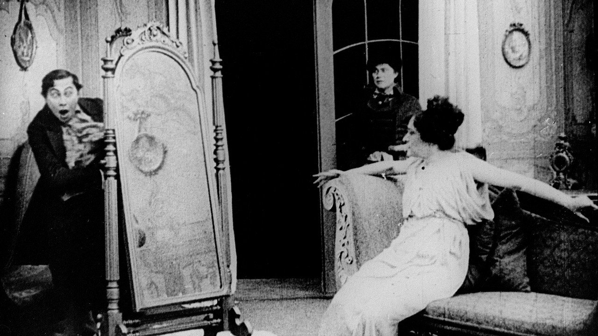
Пражский студент
Бедный студент продаёт чародею своё отражение — и оно выходит из зеркала, чтобы погубить хозяина. Прямой пример из исследования Ранка.
Один из первых
авторских фильмов
Сценарий написал Ханс Хайнц Эверс, главную роль сыграл Пауль Вегенер. Картина заявила, что кино способно на серьёзную литературную тему, а не только на ярмарочный аттракцион.
Двойную роль обеспечивала съёмка с маскированием кадра: один актёр встречается с самим собой в пределах одного плана.
Именно этот фильм Отто Ранк сделал главным примером в работе «Der Doppelgänger» 1914 года.
В 1926 году вышла новая версия Хенрика Галеена с Конрадом Фейдтом в роли студента.
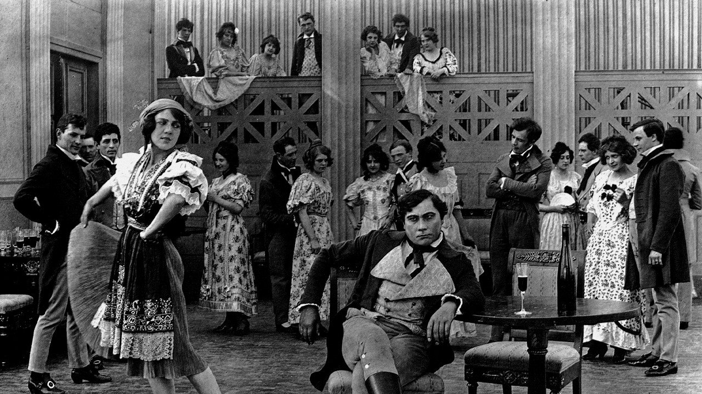
Сделка у зеркала
Отражение Балдуина спокойно выступает из стекла, пока сам студент стоит перед пустой рамой. Зеркало впервые отказывается возвращать образ владельцу.
Убить двойника — убить себя
Доведённый до отчаяния, Балдуин стреляет в двойника — и падает замертво сам: разорвать связь с отделившимся образом нельзя, не уничтожив себя. Сделка с зеркалом оказалась продажей собственной души.
Двойник как смерть
Образ, что обещал умножить «я», становится тем, кто его убивает. Нарциссическая опора оборачивается гибелью.
Зеркало, что не возвращает
Балдуин теряет себя ровно там, где зеркало перестаёт возвращать образ. Сцена собрала вокруг себя два сильных прочтения:
Учредительный момент — наоборот
Спустя десятилетия Лакан опишет обратную сцену: ребёнок впервые узнаёт себя в отражении и строит «я» на этом чужом образе. Фильм 1913 года показывает распад той же опоры.
Двойник — эффект техники
«Граммофон — кино — пишущая машинка»: оптическая запись отбирает у человека его подобие; сцена у зеркала читается как манифест самого медиума.
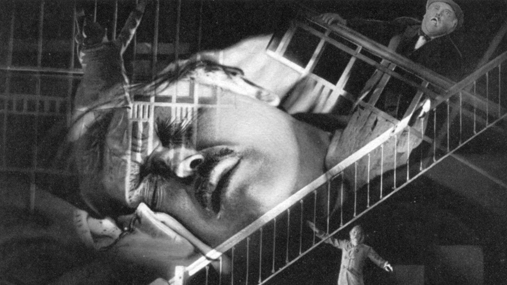
Тайны одной души
Первый игровой фильм, снятый, чтобы показать на экране сам психоанализ. В главной роли — Вернер Краусс, тот самый Калигари.
Фильм при участии
круга Фрейда
Картину выпустила студия UFA как просветительский проект о психоанализе. Консультантами выступили аналитики из ближайшего круга Фрейда — Ханс Сакс и Карл Абрахам.
Самого Фрейда приглашали участвовать, но он отказался: пластическое изображение абстракций анализа казалось ему невозможным — тот же довод, что и в истории с Голдвином.
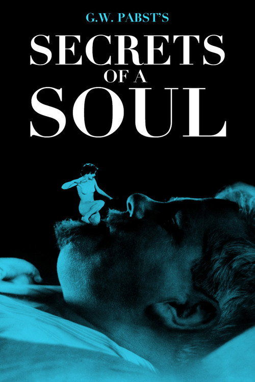
Как снять сновидение
Башни, поезда, ножи и лодка наплывают друг на друга в двойной экспозиции. Образы не иллюстрируют тревогу, а шифруют её по логике сгущения и смещения.
Симптом, разгаданный речью
Фильм драматизирует сам метод: аналитик расспрашивает, толкует сон и детское воспоминание, и фобия ножей раскрывается как замаскированный страх и ревность. Лечение совпадает с разгадкой — удобная драматургия, что упрощает кропотливую клиническую работу до детективной развязки.
Просвещение и упрощение
Картина впервые делает анализ зрелищем — и тем же ходом приглаживает его до сюжета с быстрым исцелением.
Когда анализ смотрит в зеркало
«Тайны одной души» — редкий случай, когда психоанализ не инструмент разбора, а прямой предмет фильма. Столетию двух изобретений посвящён сборник «Endless Night» (ред. Бергстром, 1999) — оттуда два голоса:
Проблема фигуративности
Из отказа Фрейда выводится главный урок: бессознательное не даётся изображению — кадр показывает всё, кроме него.
«Жуткий манёвр»
Картина Пабста лавирует между кушеткой и камерой: перевод анализа в зрелище оборачивается его упрощением.
Три первичные фигуры
Калигари · Носферату
Знакомое, ставшее чужим; возврат вытесненного через тень, нежить и косую декорацию.
Пражский студент
Отделившееся «я» из зеркала: нарциссическая опора, что оборачивается смертью.
Тайны одной души
Психоанализ как предмет фильма и первый разрыв между клиникой и кадром.
Немое немецкое кино выстроило грамматику бессознательного раньше, чем теория описала её. Тень, отражение, автомат и сон стали готовыми средствами показывать то, для чего у психики нет слов.
Два бессознательных
Осадок вытесненного
Бессознательное складывается из подавленного; его язык — конфликт, желание, цензура; путь к нему — толкование.
Общий слой архетипов
Под личным лежит наследуемое: Тень, Анима, Самость; дорога к нему — индивидуация, а речь его — миф.
Переписка обрывается в 1913 году, после юнговских «Метаморфоз и символов либидо»: школы расходятся навсегда. Для этой лекции важен мост: Тень наследует Двойнику — фигуру, описанную Ранком клинически, Юнг переписывает как всеобщую.
Тень выходит в масскульт
Архетип живёт в рассказе: массовая культура строит героев по юнговским лекалам и умеет их же разбирать. «Хранители» деконструируют супергероя, а Роршах носит маску-пятно — подвижный инкблот, в котором каждый видит своё.
Психоанализ здесь работает как теория нарратива; о болезни персонажа речь не идёт.
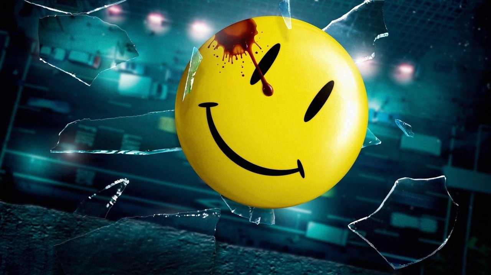
Почему масскульт выбрал Юнга
Архетип как конструктор
Кэмпбелл сводит мифы к единой формуле («Тысячеликий герой», 1949), Воглер превращает её в сценарное пособие (1992). Архетип продаётся: из него собирают истории.
Инструмент вскрытия
Теории нужен скальпель, а не рецепт успеха: вытеснение, желание и взгляд показывают, как текст работает и что прячет.
Предел коды: мифокритика тянется к универсализму и стирает историю. Дальше курс идёт фрейдо-лакановской линией; Юнг остаётся собеседником на полях.
Что метод даёт и где буксует
Родное сродство
Кино и психоанализ работают с поверхностью как с шифром. Понятия жуткого и двойника точно ложатся на средства немого кадра.
Три риска
Анахронизм: эссе о жутком — 1919-й, фильмы — 1913–1926-й. Соблазн читать любую тень как «бессознательное». И опасность скатиться в диагноз персонажу или эпохе.
Двойник в цифровую эпоху
Каталог жуткого не устарел, а получил новые носители.
Зловещая долина роботов и анимации, дипфейк и синтетический голос, аватар и цифровой двойник умершего, нейросеть, что говорит чужими словами, — всё это новые формы отделившегося подобия и ожившего автомата.
«Uncanny valley» Мори (1970) — прямое продолжение спора Йенча о живом и неживом.
Вампир и зомби возвращаются в каждом кризисе как фигура вытесненного.
Карта курса
К семинару
Сцена × шесть шагов
Одна сцена из фильмов лекции, проведённая через алгоритм; 300–400 слов, без пересказа фабулы.
Один из двух вопросов
«Почему масскульт выбрал Юнга, а теория — Фрейда?» либо «Чей „Калигари“ убедительнее: Кракауэр, Айзнер, Робинсон, Элзессер?» 800–1000 слов.
Просмотр
«Андалузский пёс» (21 мин), «Завороженный» и «Вампир». Держать в уме вопрос: где сон работает, а где его только показывают.